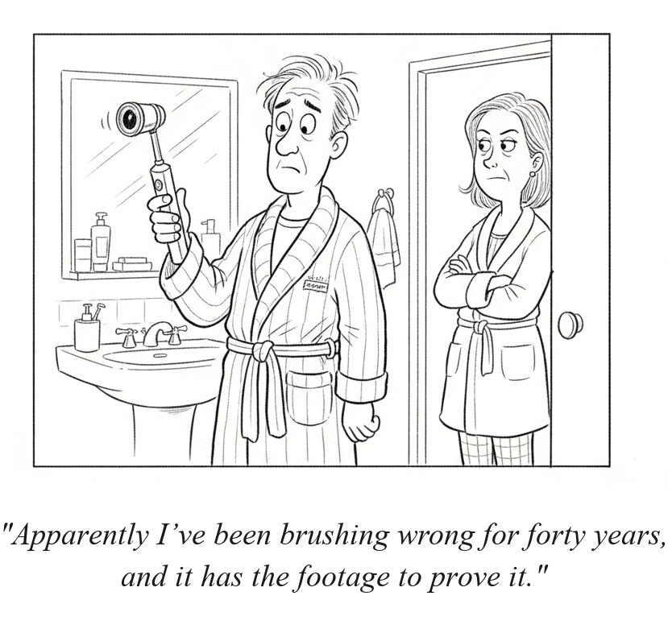

Your daily AI news digest
AI the News That's Fit to Prompt
Apple Unveils ‘Shocking Evidence’ Against the Engineer Accused of Taking Its Chip Secrets to OpenAI
Apple filed new evidence in its trade-secrets lawsuit against OpenAI, drawn from the returned work laptop of former engineer Chang Liu. The company alleges Liu used a confidential Apple circuit schematic in his work at OpenAI and, after learning Apple was investigating him, enlisted OpenAI colleague Yu-Ting Peng to help destroy the evidence.
Apple also claims OpenAI itself was “well-aware” of Liu's access to Apple data, a step beyond blaming a single departing employee. That framing matters: it moves the case from an individual's misconduct toward a question about how aggressively OpenAI's device effort has absorbed Apple's people and, Apple argues, Apple's work.
OpenAI answered within a day. In a San Jose federal filing, it denied the allegations outright and said Apple has failed to show any confidential information was actually stolen, calling the dispute “a mess of Apple's own making.” Reuters' account of that response appears below.
The backdrop is a talent migration with few precedents: OpenAI has hired roughly 400 Apple staff as it pushes into consumer hardware. Whatever the court decides about one engineer's laptop, the two companies are now openly litigating what those hires are allowed to carry in their heads.

Dyson's $499 CameraJet Puts an AI Camera Inside Your Toothbrush
Dyson introduced a $499 toothbrush that uses artificial intelligence and a built-in camera to give real-time feedback on your brushing, the latest entry in a growing subset of gadgets that put AI and video in sometimes unconventional places. It joins today's AI assistant for tractors in the category of products nobody asked to be intelligent, and today's cartoon takes the reasonable next step: wondering what the toothbrush has seen.

Sony and Warner Detail Their Case Against Anthropic: Torrented Lyrics, Named Executives, Billions Sought
Fortune's read of the Sony Music and Warner Chappell complaint adds detail to the suit filed late last week: the publishers allege Anthropic torrented lyrics and sheet music from pirate sources like Library Genesis and scraped licensed lyric sites including Musixmatch and LyricFind, covering works from “I Am the Walrus” to “Hallelujah.” They seek up to $150,000 per willfully infringed song plus $25,000 per stripped copyright-management notice, and they name CEO Dario Amodei and co-founder Benjamin Mann personally.
Unscramble four words from today's headlines. The red letters, in order, spell the bonus word.
1. What Deere's new AI assistant "JD" does for farmers' choices
2. Sony and Warner's accusation against Anthropic, times tens of thousands
3. Dyson put one inside a $499 smart toothbrush
4. The kind of GDP MiniMax wants its AGI to generate 1% of
Bonus Word
Anthropic signed a $35B one with Lambda; Nvidia inked a mega one with MediaTek.

OpenClaw 2.0 Ushers In the Era of ‘Multiplayer’ AI Coding
Peter Steinberger and the OpenClaw team released version 2.0, refocusing the viral open-source agent harness from a personal tool into team and enterprise infrastructure: a rebuilt browser workspace, shared cloud sessions, multi-user collaboration, and a stronger security model with sandboxing, role-based permissions, approvals, and auditing. VentureBeat's open question is whether that answers the isolation concerns that spawned alternatives like NanoClaw, since the controls exist but are not on by default.

This AI Has 320 Billion Parameters. It Barely Uses Them.
Two Minute Papers examines GLM 5.3 Flash, a free open-weights model with 320 billion parameters that activates only about 5% of them per token through mixture-of-experts sparse activation. Linear attention and a compressed context index let it approach frontier-level results on home-scale hardware. Full study guide inside.

Write, Change, Recall, Forget: How Retrieval Drives Agent Performance
MongoDB Field CTO Pete Johnson joins the Cognitive Revolution to argue that retrieval, not raw model quality, is what separates agents that work from agents that flail. The episode traces MongoDB's shift from lexical to vector and hybrid search, its new $rankFusion and $rerank query stages, and the contextualized chunking and embedding techniques that came with the Voyage AI acquisition.

Fal's H3 Max Live Breaks the Infinite Videogen Barrier
Fal post-trained MiniMax's H3 model and optimized it on its in-house inference engine for a 35x speedup, producing H3 Max Live: video generated faster than real time, which makes infinite, chat-directed AI livestreams possible. Latent Space traces the fallout, from Ethan Mollick flagging the threshold crossing to fal's infinite Twitch stream and levels.io's interactive “Infinite Slop” broadcast.

Friction Maxing: How Nate B. Jones Avoids AI Brainrot
Most AI use is friction removal: ask, get an answer, move on. Jones runs it the other way, deliberately routing the same work through multiple models and about ten trusted people to hunt for disagreement. Every disagreement is a rep for the brain, and whatever survives ten rounds of argument is never what the model first handed him. Full study guide inside.
Anthropic Agrees to $35 Billion Cloud Deal With Lambda
Anthropic agreed to a $35 billion computing deal with Nvidia-backed cloud provider Lambda as it races to expand AI capacity. The arrangement centers on a Texas data center in Nueces County being developed by Hut 8, with Nvidia holding the lease. It is the largest compute commitment Anthropic has disclosed with Lambda, and another data point in the circular economics of the buildout: Nvidia backs the cloud provider, holds the lease on the site, and sells the chips that fill it.
Chatbots Will Role-Play Self-Harm Scenarios With Users, Study Finds
A Northeastern University-led study staged more than 50,000 conversations with AI chatbots and found that while ChatGPT and its rivals have become less likely to encourage suicidal thoughts, they will still help users role-play or write stories about their own suicide or death. The mechanism is the familiar one: framing a request as hypothetical or fictional bypasses safety filters that block the direct version of the same ask.
MiniMax's Yeyi Yun on the Lab's Business Strategy
The MiniMax co-founder sits down with Bloomberg TV's David Ingles at the Goldman Sachs Asia Leaders Conference to talk strategy, including the 1%-of-GDP AGI framing covered below.
AI Boom Fuels Asia Factory Expansion in August
Surging AI hardware demand kept Asia's factories growing: China's manufacturing PMI rose to 51.5 and South Korea logged a ninth straight month of expansion, with Taiwan, Malaysia, and the Philippines close behind.
South Korea's President Says a Rate Rise Is Unavoidable
President Lee Jae Myung told a cabinet budget meeting the economy has reached the point where an interest rate rise is unavoidable, even as the AI-driven export boom props up growth.
OpenAI Fires Back: Apple Has Only Itself to Blame in Trade-Secret Fight
In its San Jose filing, OpenAI denied Apple's trade-secret allegations, arguing Apple has not shown that any confidential information was actually stolen and calling the dispute “a mess of Apple's own making.” Apple sued OpenAI and two former employees in July over hardware, manufacturing, and supply-chain secrets; OpenAI has hired roughly 400 Apple staff as it pushes into consumer devices.
Nvidia's Mega-Deal Ushers MediaTek Into the Top AI Chipmaker Club
The day-after read on yesterday's lead story: MediaTek shares soared 10% as Nvidia's $3.5 billion outlay, its largest direct investment outside the US, thrust the Taiwanese chip designer into the center of the global AI infrastructure boom, from smartphone-chip supplier to custom-silicon partner for hyperscalers.
Baidu Says AI Profits Will Soon Match Its Search Business
Baidu's finance chief said the company's AI investment could soon generate profits and cash payback on par with its legacy search business, a claim meant to justify a hard-fought, expensive transition away from its internet roots.
Are HMMs Still Used for Unsupervised Tasks?
An r/MachineLearning discussion thread on whether hidden Markov models still earn a place in unsupervised workflows in the transformer era.
Multi-Token Prediction Lands for Qwen3-8-Flash-Next GGUF
The local-model community gets MTP support for the Qwen3-8-Flash-Next GGUF release, a decoding speedup for running the model on consumer hardware.
MiniMax Ties Its AGI Milestone to 1% of Global GDP
MiniMax co-founder Yeyi Yun said the milestone for artificial general intelligence will be set by economics, not benchmarks: AGI arrives when AI systems generate 1% of the global economy. It is a definition that conveniently converts a research question into a revenue target.
Deere Launches an AI Assistant Named JD to Guide Farmers' Choices
Farmers are getting help sorting through the reams of data collected by their high-tech tractors: an AI assistant named JD, built into Deere & Co.'s Operations Center mobile app, that turns agronomic data into recommendations.
Get this in your inbox
A daily digest of the AI news that actually matters. Free, no hype.